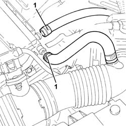
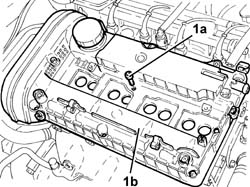
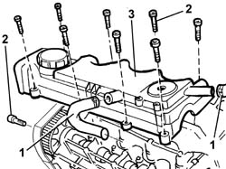

1016A20 single cam cover - r + r and replace gasket
- Path
- Procedures > 10 ENGINE > 1016 CYLINDER HEAD/S > 1016A cam covers > 1016A20 single cam cover - r + r and replace gasket
- Kind
- repair procedure (removal / refitting; the operation number is the code)
- Applies to
- engines: 1.6 TS, 2.0 TS, 1.9 JTD 8V; all production periods
- Interactive page
- https://sloeber94.github.io/elrnDB-a147/en/#/3024765
Applies to: engines: 1.6 TS; all production periods
 Removing
Removing
 Refitting
RefittingProceed with the removal 1016A40 ignition coil cover on cylinder head- r+r .
Proceed with the removal 5510C14 ignition coil/s - r+r .
1. Disconnect the oil vapour recirculation pipes from the single tappet cover.

Applies to: engines: 1.6 TS; all production periods
1. Undo the bolts (1a) and remove the single tappet cover (1b) complete with gasket.

Applies to: engines: 1.6 TS; all production periods
Refitting
RemovingPlace the single tappet cover, complete with a new gasket, back in its housing and secure it by tightening the bolts to the recommended torque.
 | Fastening | Component | Ø | Value (daNm) |
|---|---|---|---|---|
- | Bolt | CAM COVER | M6 | (Cylinder head side) 0.8 ÷ 1.0 |
Connect the oil vapour recirculation pipes to the single appet cover.
Proceed with the refitting 5510C14 ignition coil/s - r+r .
Proceed with the refitting 1016A40 ignition coil cover on cylinder head- r+r .
Applies to: engines: 2.0 TS; all production periods
Removing
RefittingProceed with the removal 1016A40 ignition coil cover on cylinder head- r+r .
Proceed with the removal 5510C14 ignition coil/s - r+r .
1. Disconnect the oil vapour recirculation pipes from the single tappet cover.
Applies to: engines: 2.0 TS; all production periods
1. Undo the bolts (1a) and remove the single tappet cover (1b) complete with gasket.
Applies to: engines: 2.0 TS; all production periods
Refitting
RemovingPlace the single tappet cover, complete with a new gasket, back in its housing and secure it by tightening the bolts to the recommended torque.
| Fastening | Component | Ø | Value (daNm) |
|---|---|---|---|---|
- | Bolt | CAM COVER | M6 | (Cylinder head side) 0.8 ÷ 1.0 |
Connect the oil vapour recirculation pipes to the single appet cover.
Proceed with the refitting 5510C14 ignition coil/s - r+r .
Proceed with the refitting 1016A40 ignition coil cover on cylinder head- r+r .
Applies to: engines: 1.9 JTD 8V; all production periods
Removing
Refitting1016A10 sound-proofing cover - r + r
1. Disconnect the two oil vapour pipes from the tappet cover.
2. Unscrew the retaining bolts
3. Remove the cam cover.

Applies to: engines: 1.9 JTD 8V; all production periods
Refitting
RemovingFit the tappet cover on the cylinder head.
Tighten the bolts fixing the tappet cover to torque.
| Fastening | Component | Ø | Value (daNm) |
|---|---|---|---|---|
- | Bolt | CAM COVER | M6 | WHITE |
Connect the oil vapour pipes to the tappet cover.
Topics linked from this page (3)
- 1016A10 sound-proofing cover - r + r
- 1016A40 ignition coil cover on cylinder head- r+r
- 5510C14 ignition coil/s - r+r
Topics that link to this page (19)
- 1008C18 link mount on engine - r r
- 1016C10 cylinder head - r + r and replace gasket
- 1020D15 Crankshaft oil seal FRONT COVER - R.R. and Replace. gaskets on engines with oil pump on crankshaft and heat exchanger
- 1020D18 front crank shaft cover oil seal - replace
- 1020E10 oil seal cover (one) - l or r - on counter-rotating shafts - r + r and replace seals
- 1028H10 connecting rod and piston set - r r
- 1032B10 toothed timing belt - r + r for timing adjustment or replacement
- 1032B46 toothed drive pulley - r + r
- 1032B52 toothed driven pulley (one) - r + r
- 1032C18 mobile timing system tensioner - r + r for 24 valve engines
- 1032C32 fixed timing system tensioner (one) r + r
- 1036B10 overhead camshaft - r r on vehicle
- 1036C10 camshaft in cylinder head - r r on vehicle
- 1036H10 valve tappets - check and adjust clearance
- 1036H14 valve tappets - check clearance
- 1056B51 cam angle sensor r + r
- 1084B50 timing mount oil pipe - r r
- 1088C10 water pump - r + r
- 4130B32 power steering pump mount - r r